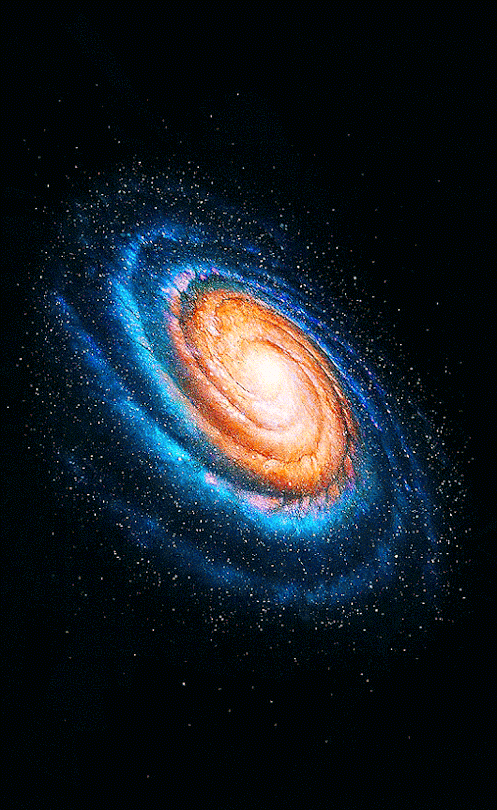
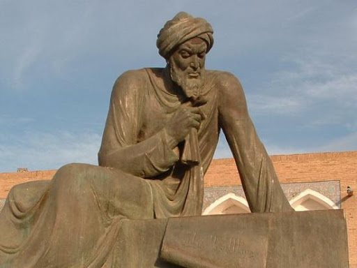

Les mathématiques
Al-Khwârismî est l'auteur de plusieurs ouvrages de mathématiques. Le plus célèbre, intitulé Abrégé du calcul par la restauration et la comparaison, est considéré comme le premier manuel d'algèbre, Ce livre contient six chapitres. Il ne contient aucun chiffre.Toutes les équations sont exprimées avec des mots. Al-Khwârismî définit ainsi six équations canoniques auxquelles peuvent être ramenés les problèmes concrets d'héritage, d'arpentage des terres, ou de transactions commerciales. Le terme al-jabrn est repris par les Européens et devient plus tard le mot algèbre.

L'Astronommie
Al-Khuwarizmi est l'auteur de trois ouvrages consacrés à des instruments : un ouvrage mineur sur le cadran solaire, un livre sur la réalisation de l'astrolabe et un livre sur l'utilisation de l'astrolabe. Son ouvrage sur le calendrier juif est un des plus anciens exposé sur le sujet. Il y expose le découpage de l'année, la position des étoiles à certaines moments clefs, il est en outre l'auteur des premières tables connues pour régler les heures des prières de la journée.Comme de nombreux astronomes de cette époque, Al-Khwârizmî est aussi astrologue, il a même essayer de prédire quand allait mourrir le calife.

Le futur de ses oeuvres
Au Moyen Âge, la première partie de l'œuvre d'Al-Khwârismî est traduite en latin au moins à trois occasions. La première traduction est faite par l'Anglais Robert de Chester, à Ségovie, vers l'an 1145. Un peu plus tard, Gérard de Crémone en fait une à Tolèden , et la troisième parl'Italien Guillaume de Lunan .
L'Occident latin prend alors connaissance de l'œuvre. La traduction de son Livre de l'addition et de la soustraction d'après le calcul indien apparaît en Europe, La méthode de résolution des équations par restauration et comparaison est reprise par les savants arabes et arrive en Europe par de nombreuses sources. Dès le début du XIIe siècle, on sait que l'on peut résoudre les équations par al-jabr et al-muqabala. Robert de Chester traduit partiellement vers 1145 le livre d'Al-Khwârismî.
Ses Tables astronomiques seront reprises par l'astronome d'Espagne Maslama al-Mayriti, puis traduites vers 1126 par Adelard de Bath, sont une des trois sources arabes principales ayant servi à l'initiation des astronomes latins. Elles entrent pour une part dans la constitution des Tables de Tolède qui auront une grande influence sur l'astronomie européenne du XIIIe siècle.